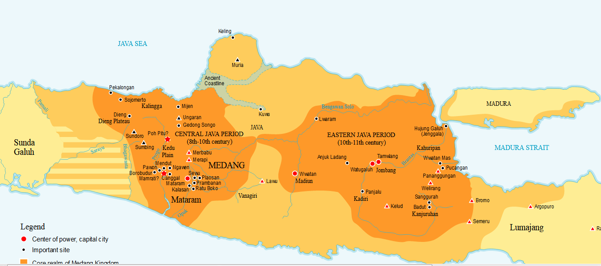

Peta

Penjelasan
Kerajaan mataram kuno terletak di Magelang Yogyakarta, Jawa Tengah. Pendiri dari kerajaan tersebut adalah Raja Sanjaya. Raja yang pernah berkuasa di kerajaan ini adalah Raja Wisnu, Raja Indra dan Raja Samaratungga. Peninggalan kerajaan ini berupa Candi Borobudur.
Peninggalan